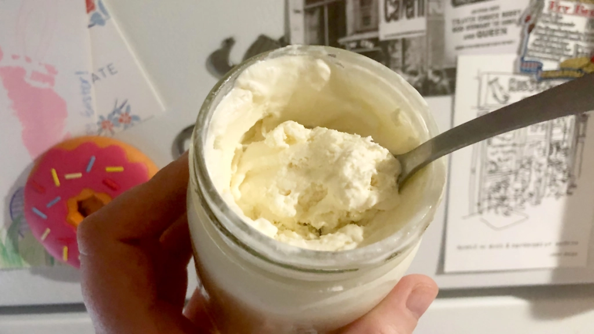

Mason Jar Ice Cream

DIYers, parents, children, aunts, uncles, and grandparents alike will absolutely love this recipe, and I am willing to bet that you can skip the trip to the grocery store because chances are, if you cook even infrequently, you will likely have all of these ingredients. After spending about six years in the Phoenix valley of Arizona, I quickly learned the importance of cold dairy treats, and this one is a triple threat: cheap, quick, and easy. Please enjoy this recipe, with credit for
this specific recipe goes to Phoenix New Times.
Ingredients
- 1 cup heavy cream
- 1 1/2 tablespoons granulated sugar
- 1 1/2 teaspoons vanilla extract
- A pinch of salt
- A 16 oz Mason jar
Yield: About three servings.
Instructions
- The salt and sugar are a little coarse. So, once you have your increments, give them a little muddling for a finer add-in.
- Get the cream, sugar, vanilla extract, and salt into the jar, then put a lid on it.
- Shake the s**t out of it. It will start to thicken after a few minutes and feel heavier in your hand. By the time the inside looks more like batter, you’re good.
- Stick the jar in the freezer for three hours or more.
Return to main page